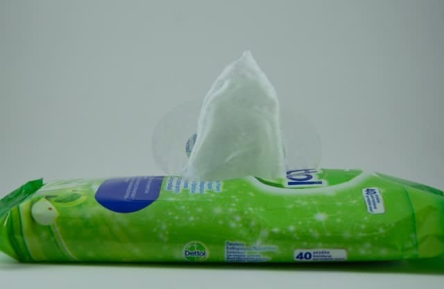
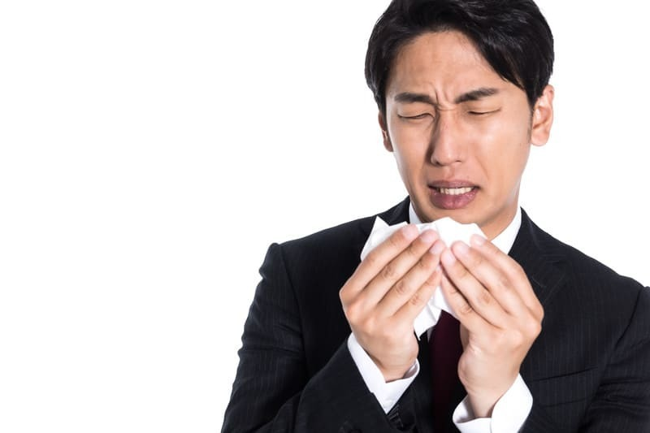
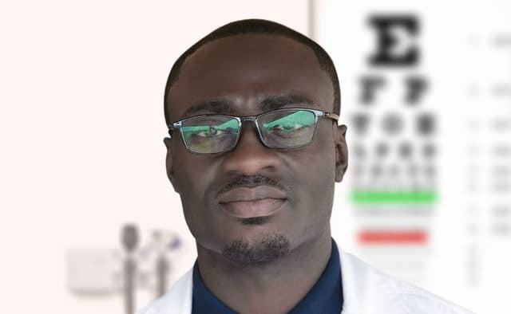

歯性上顎洞炎の鍼灸
奥歯の虫歯や歯周病から細菌が上顎洞へ広がり起こる副鼻腔炎です。歯科・耳鼻科での原因治療を最優先に不快感を支えます。
まず知っておきたい要点と改善の流れ
歯性上顎洞炎は、上の奥歯の虫歯や歯周病、歯根の亀裂・外傷などを放置したことで、黄色ブドウ球菌や連鎖球菌などの細菌が歯根に近接する上顎洞へ侵入し炎症を起こす病気です。通常の鼻性副鼻腔炎と異なり、原因歯のある片側だけに症状が出やすい特徴があります。自然治癒することはほとんどないため、歯科での原因歯治療（根管治療や必要に応じた抜歯）と、耳鼻咽喉科での抗菌薬・消炎治療の連携が必須です。（公式解説）
このようなお悩みはありませんか？
- ✓上の奥歯の痛みや噛んだ時の違和感がある
- ✓片側の目の下や頬骨の周囲を押すと痛む
- ✓片側だけ鼻水や鼻詰まり、嫌なにおいが続く
- ✓顔の重だるさに加えて頭痛や微熱・倦怠感がある
当院の施術アプローチ・改善の流れ
なぜ鍼灸で改善へ向かうのか？（作用機序の図解）
歯性上顎洞炎に対する鍼灸は、耳周囲・頸部の微小循環改善と聴覚・粘膜調整機序を通じて、お体本来の回復力を引き出します。

翳風・風池・合谷など、耳鼻咽喉領域の神経・血管と連動する経穴へ繊細にアプローチします。
首・顎まわりの深層筋緊張を緩め、内耳や粘膜周囲の滞った血流とリンパ循環を促します。
ストレスや睡眠不足で高ぶった交感神経を鎮め、音への過敏反応や粘膜の過剰反応を和らげます。
標準治療を妨げない設計で、生活支障度（THI等）の軽減と再発しにくい体調づくりを支えます。
院長YouTube解説・関連動画
公開日：２０２１年 ９月２３日
更新日：２０２１年 １１月 ３日
本日は歯性上顎洞炎について解説させていただきます。

☆本記事の内容
- •歯性上顎洞炎とは
- •歯性上顎洞炎の原因
- •歯性上顎洞炎の症状
- •歯性上顎洞炎の改善方法
- •歯性上顎洞炎のまとめ
- •歯性上顎洞炎は、虫歯をそのままにしておいたことで起きる副鼻腔炎
- •歯性上顎洞炎の主な原因は、虫歯や歯周病
- •歯性上顎洞炎の症状は、歯の痛み、目の下や頬骨周りの腫れや痛み
- •歯性上顎洞炎を改善するためには、原因となっている歯を改善する
- •早めに改善を行うことが重要
銀座そうぜん鍼灸院の宗前です。
このページを書いている私は、鍼灸師として１３年、担当した利用者様数８０，０００人を誇り、病気の休職者３００人を社会復帰できるまで回復させてきた実績があります。
歯性上顎洞炎の症状は、歯の痛み、目の下や頬骨周りの腫れや痛み

歯性上顎洞炎の症状は、歯の痛みや違和感、目の下や頬骨の周りの腫れや痛みです。目の下や頬骨の周り痛みは押した時に感じます。他にも、鼻水が出たり、鼻詰まりが起こったりします。
場合によっては、頭痛や発熱や倦怠感などが起こることもあります。両方の上顎洞に炎症が起こる鼻性の上顎洞炎とは違い、歯性上顎洞炎は原因となっている歯がある側だけに炎症が起こります。
歯性上顎洞炎を改善するために1番大切なことは、原因となっている歯を改善することです。
耳鼻科での改善では、溜まっている膿に対して薬を使って改善を行なっていきます。使う薬は、消炎鎮痛剤や抗生剤です。
歯性上顎洞炎を改善するためには歯科と耳鼻科で協力して両方から改善を行なっていくことが必要なのです。

虫歯や歯周病の改善を行なっても良くならない場合は、抜歯をして原因となっている膿を直接取ることが必要になることもあります。
歯性上顎洞炎は改善を行わずにそのままにしておいても自然に改善することはありません。そのままにしておくことで症状が重くなることもあります。早めに改善を行うことが重要です。

鼻炎・副鼻腔炎・嗅覚障害の鼻周囲＆全身ツボ図解
実際の施術ではお一人おひとりの体質・症状に合わせて選穴しますが、アレルギー性鼻炎・慢性副鼻腔炎・嗅覚障害の粘膜・自律神経ケアの臨床でよく用いられる代表的なツボの目安です。

📌 代表的なツボの詳細一覧表を開く（6穴） ▼
| ツボ名 | 位置の目安 | 主な狙い | セルフケアの注意点 |
|---|---|---|---|
| 印堂（いんどう） | 左右の眉間の真ん中 | 鼻根部の重だるさ・前頭洞周囲のうっ血緩和 | 鼻をかんだあと、指の腹で優しく5秒押します。 |
| 上迎香（じょうげいこう） | 鼻筋の上部、骨と軟骨の境目のくぼみ | 鼻通（びつう）とも呼ばれ、鼻づまり・嗅覚サポートに重要 | 左右同時に軽く押さえてゆっくり鼻呼吸します。 |
| 迎香（げいこう） | 小鼻のすぐ横のくぼみ | 鼻粘膜の血流調整・アレルギー性鼻炎の代表穴 | 国際臨床研究でも鼻炎に対して最頻用されるツボです。 |
| 列缺（れっけつ） | 手首の親指側、シワから指2本分肘寄り | 肺・気道粘膜の過敏性調整・頭頸部の巡り改善 | 人差し指で軽く押さえてほぐします。 |
| 合谷（ごうこく） | 手の甲、親指と人差し指の間 | 鼻炎の炎症バランスと顔面循環の遠隔調整 | 花粉症シーズン前の予防ケアにもよく使います。 |
| 足三里（あしさんり） | 膝の下外側、指4本分下 | 免疫バランス・胃腸と粘膜バリアの土台づくり | 全身の体質調整として併用します。 |
国際査読論文の科学的エビデンス
国際的な医学データベース（PubMed・Cochrane等）で報告されているアレルギー性鼻炎・慢性副鼻腔炎・嗅覚障害の粘膜・自律神経ケア領域の代表的な査読済み鍼灸研究をまとめています（標準治療との併用や研究上の限界を含めて正確に掲載）。
📚 査読論文データ・PubMed出典リンクを開く（4件） ▼
| 年・研究デザイン | 対象・規模 | 主な結果 | 限界・出典 |
|---|---|---|---|
| 2013年 大規模多施設RCT | 季節性アレルギー性鼻炎 422名（ドイツ） | 7〜8週のRQLQ QOLがシャム比0.5点・薬単独比0.7点改善（P<0.001）、頓用薬使用も有意減少（P<0.001）。 | 1年目16週では群間差消失、臨床的意義は慎重評価。 Ann Intern Med (PMID: 23420231) |
| 2021年 メタ解析 | 耳鳴り 8 RCTs（n=504） | 生活支障度THI（MD -10.11, p<0.001）・TSI（MD -8.36, p<0.001）が有意改善。VASは有意差なし（p=0.06）。 | 組入れRCTの質・サンプル規模に限界あり。 Acupunct Med (PMID: 32772848) |
| 2026年 ネットワークメタ解析 | 突発性難聴 36研究（n=3,360・標準治療併用） | ステロイド等の標準治療への鍼灸併用で総有効率RR 1.19（p<0.0001）、3週間コースが推奨。 | エビデンス確実性は低く標準治療（早期ステロイド）併用が前提。 Complement Ther Med (PMID: 42918509) |
| 2023年 メタ解析 | 成人顎関節症 22 RCTs統合（n=471） | 標準治療併用で有効率RR 1.36・疼痛VAS MD -1.23と有意改善。 | GRADE確実性は低〜非常に低、さらなる高品質RCTが必要。 Medicine (PMID: 37746950) |
参考文献・出典
- 銀座そうぜん鍼灸院「歯性上顎洞炎の公式解説ページ」
- 2013年 大規模多施設RCT（季節性アレルギー性鼻炎 422名（ドイツ））— Ann Intern Med (PMID: 23420231)
- 2021年 メタ解析（耳鳴り 8 RCTs（n=504））— Acupunct Med (PMID: 32772848)
- 2026年 ネットワークメタ解析（突発性難聴 36研究（n=3,360・標準治療併用））— Complement Ther Med (PMID: 42918509)
- 2023年 メタ解析（成人顎関節症 22 RCTs統合（n=471））— Medicine (PMID: 37746950)
よくある質問（FAQ）
Q. 歯医者に行かずに鍼灸だけで歯性上顎洞炎を改善できますか？▼
Q. 歯科治療と並行して鍼灸を受けるメリットはありますか？▼
あわせて読まれる関連疾患（耳鼻咽喉のお悩み）
ある日突然片耳などが聞こえにくくなる感音難聴です。発症早期の耳鼻科ステロイド治療を最優先に、早期併用や回復期の耳鳴り・めまいをケアします。
実際には音がないのに耳の中で雑音が聞こえる状態です。耳の血流や自律神経・脳の過敏さを整えるケアで軽減を目指します。
過剰な鼻水や粘り気のある分泌物が喉へ流れ落ちる不快な症状です。耳鼻科での原因治療と併用し、炎症の軽減と鼻奥の神経過敏を鍼灸で整えます。
鼻の奥の副鼻腔に炎症が起き、鼻詰まりや粘り気のある鼻汁が続く病気です。耳鼻科治療と並行して巡りと免疫力を整えます。
末梢神経障害やむくみなど全身症状を呈するPOEMS症候群に対し、専門医治療を最優先に安定期の穏やかな補完ケアを行います。
リンパ管が袋状に膨らむ巨大リンパ管奇形に対し、専門医管理最優先・病変部刺鍼禁忌を守り安定期の全身ケアを支援します。
おひとりで悩まず、まずはご相談ください
銀座本院・川口・大宮・横浜・博多・田無の各院でご予約を承っております。